Using GitHub with an IDE
Module Learning Objectives
By the end of this module, you will be able to:
- Describe the IDE-to-GitHub order of operations
- Define fundamental Git vocabulary
- Create a local version-controlled repository that is connected to GitHub
Overview of Git Workflow
Before we get into using Git and GitHub through an IDE (Integrated Development Environment), it will be helpful to review the major steps of including version control as you work on code. Also, note that “IDE” is the technical term for a piece of software that is used to create software; RStudio, Visual Studio Code, and Positron are all examples of IDEs with which you may already be familiar.
Beginning on your local computer, you make changes to a file in a folder that you have previously marked for version control tracking (i.e., a working directory). Once those changes are made you can stage changes within your local computer. After staging, it is best to retrieve the latest file versions from the cloud. You likely will already be up-to-date but this preemptive step can save you a lot of heartache down the line. Once you’ve confirmed that you have the latest file versions, you can shift the revised file(s) to the cloud where any GitHub users with access to your project can access the most recent file and look at the history of all previous changes.
Some IDEs (e.g., Positron, VS Code) combine a pull and a push into a single operation called a “sync”. These IDEs also support pulling and pushing separately so you may want to do those operations separately until you are completely comfortable with the necessary order of operations.

Git Vocabulary
Finally, it will be helpful to introduce four key pieces of vocabulary before we dive into the interactive component of this workshop.
Clone = copy the entire contents of a GitHub repository to your local computer (done once per computer)
Commit = move a changed local file to your local staging area (step 2 of the above diagram)
Pull = get file(s) from the cloud to your local computer – opposite of a “push” (step 3)
Push = move file(s) to the cloud from your local computer – opposite of a “pull” (step 4)

Cloning a Repository
Regardless of which IDE you are using, the first step of using using Git with that IDE is to clone the repository from GitHub. To clone a repository, follow the steps under the relevant tab for your IDE.
Navigate to the GitHub homepage of the repository that you’d like to clone.
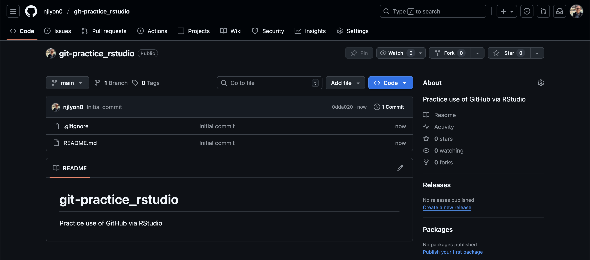
Once you are there, click the “Code” button then, in the resulting dropdown menu, copy the link under the “HTTPS” tab.
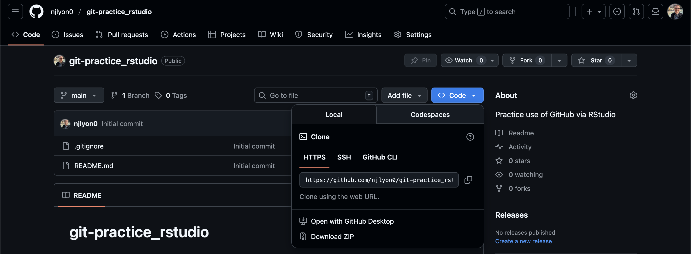
Now, switch over to RStudio. In the top right corner of RStudio, click the dropdown menu with a glass box containing a capital “R”. This button may have the name of the current RStudio project (i.e., the working directory) if you have previously used RStudio but may otherwise be just the glass box icon with “Project: (None)”.
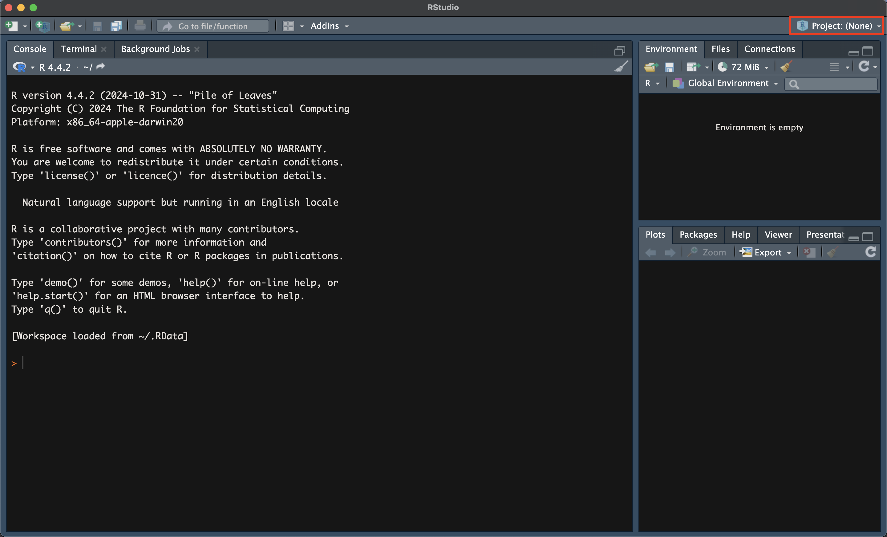
Once you have clicked that button in order to open its dropdown menu, click “New Project…”
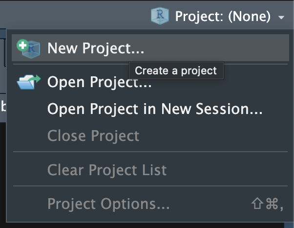
In the resulting pop-up window, select “Version Control”.
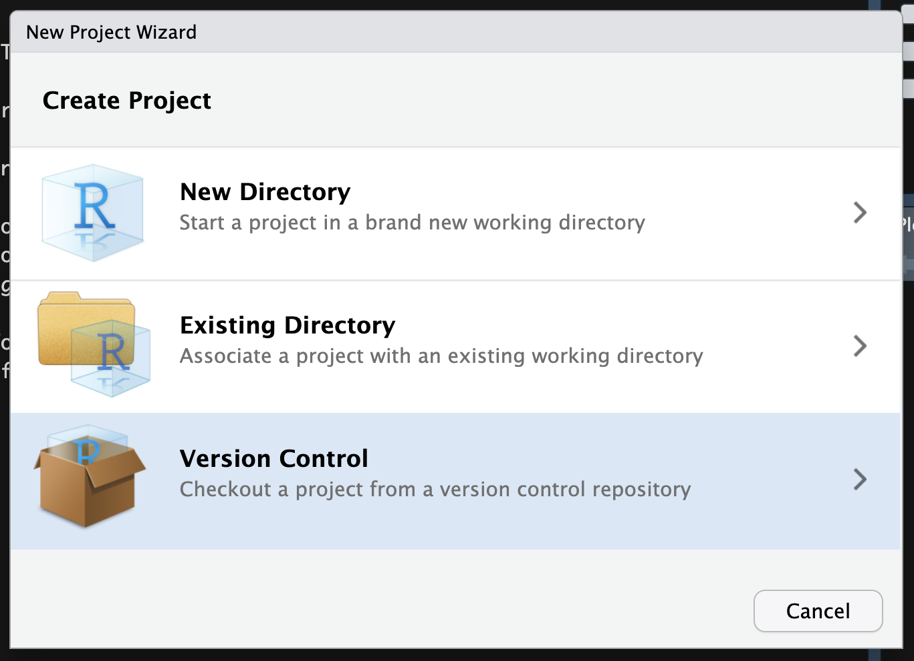
In the next page of the pop-up menu, select “Git”.
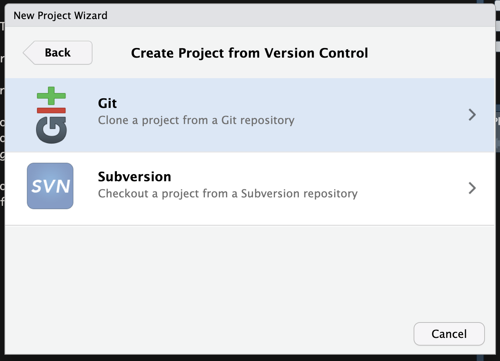
In the final page of the pop-up window, you can now specify details about the repository that you want to clone. Most critically, paste in the link you copied from the “Code” dropdown menu in GitHub in the “Repository URL” field. You can also choose the local name of the folder for this clone and where on your computer you want to create the clone; the example below just clones into the “Documents” folder but you may want to place the clone elsewhere depending on how you organize your files.
Once you have pasted in the relevant link and are happy with the local name and where the clone will be made, click “Create Project”.
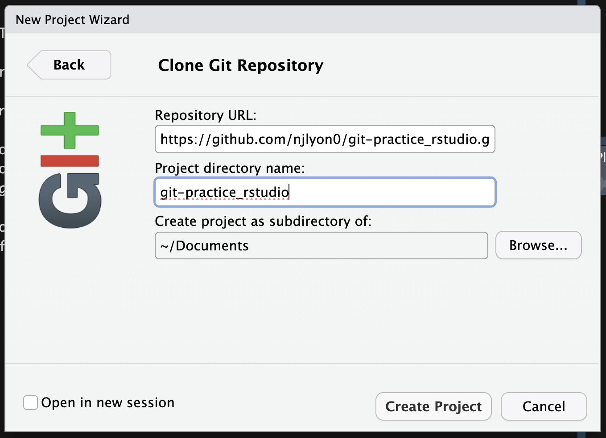
Now we have finished cloning the repository via RStudio! Notice that we are now working in the “git-practice_rstudio” project (see the name next to project name in the top right corner) and that a number of files are visible in the “Files” pane in the top right quadrant (including the “README.md” and “.gitignore” files found in our GitHub repository).
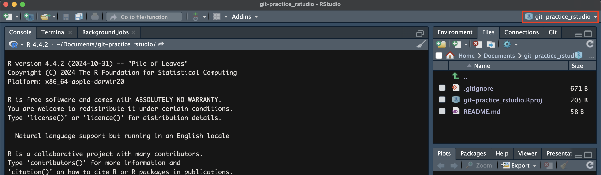
Navigate to the GitHub homepage of the repository that you’d like to clone. Once you are there, simply copy the URL in your browser’s navbar (should start with “github.com/…”).
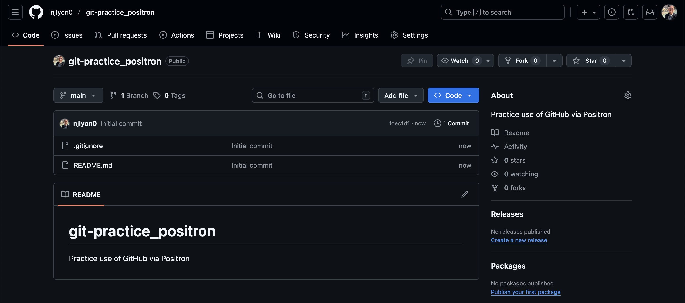
Now, switch over to Positron. In the top right corner, click the dropdown menu with a folder icon. This button may have the name of the folder Positron is currently focused on (i.e., the working directory) if you have previously used Positron but may otherwise be just a folder icon without text.
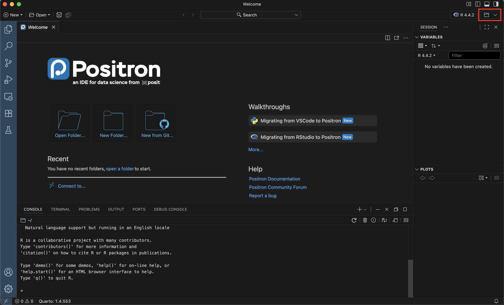
In the resulting dropdown menu, select “New Folder from Git…”.
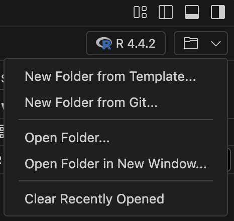
This will open a pop-up window where you can paste in the GitHub repository link that you copied earlier. You can also choose where on your computer you want to create the clone; the example below just clones into the “Documents” folder but you may want to place the clone elsewhere depending on how you organize your files.
Once you have pasted in the repository link and chosen where to download its files, click “OK”.
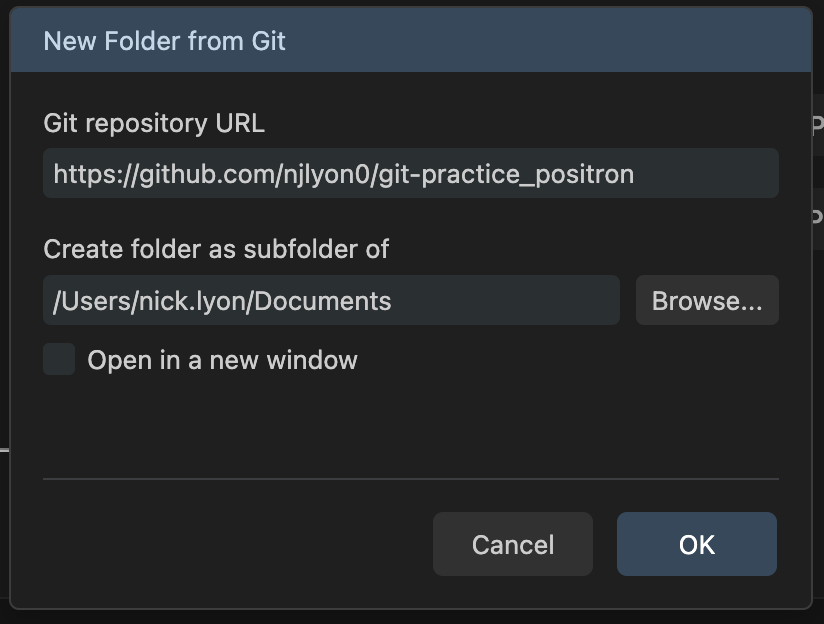
Now we have finished cloning the repository via Positron! Notice that we are now working in the “git-practice_positron” folder (see the name next to folder icon in the top right corner) and that a number of files are visible in the files pane in the left sidebar (including the “README.md” and “.gitignore” files found in our GitHub repository).
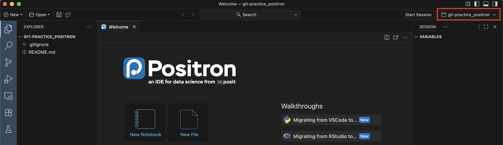
Workflow Refresher
The typical workflow with Git goes like this:
Step 1: You modify files in your working directory and save them as usual.
Step 2: You stage files to mark your intention to “commit” them and then commit that version of those files. Committing files permanently stores them as snapshots to your Git directory.
In RStudio, staging is done by checking the box next to a file in the “Git” tab
In Positron, staging is done by clicking the plus sign next to a file in the “Source Control” menu in the left sidebar
Step 3: You pull the most recent changes to make sure you’ve been editing the latest versions.
Step 4: You push your the version of your files that you committed to GitHub.
Here is the infographic from the start of this chapter again, which shows the same workflow:
Stage versus Commit
The functional difference between “staging” a file and “committing” one can be a little tough to grasp at first so let’s explore that briefly here. We can make an analogy with taking a family picture, where each family member would represent a file.
- Staging files is like deciding which family member(s) are going to be in your next picture
- Committing is like taking the picture
This 2-step process enables you to flexibly group files into a specific commit. Those groupings can be helpful to you later if you’re trying to find what you changed for a specific task (because those changes likely are all in the same commit).
Creating a New File
Let’s try out a simple Git workflow by first creating a new file. This is Step 1 of the process. To begin, open your IDE and get to the clone you just made in the previous steps. Once you are there, make a new R script and name it after yourself (e.g., lyon-script.r).
Once you have a new file in your cloned folder (i.e., the folder on your computer that you’ve told Git to track). If you click the “Git” tab–usually found in the top right quadrant of RStudio-you should see two files listed: your “.Rproj” file and the new script you created.
Both files have double yellow ? icons indicating that they are in the tracked folder but are not currently tracked themselves. Let’s get ready to commit our new script by clicking either of the two left-most buttons in the Git tab (they both open the same window).
The reason that neither the “README.md” nor the “.gitignore” appear in this tab is that the Git tab will only show files whose status has changed since the last commit. Those two files are the same as when we cloned them so they won’t appear here.
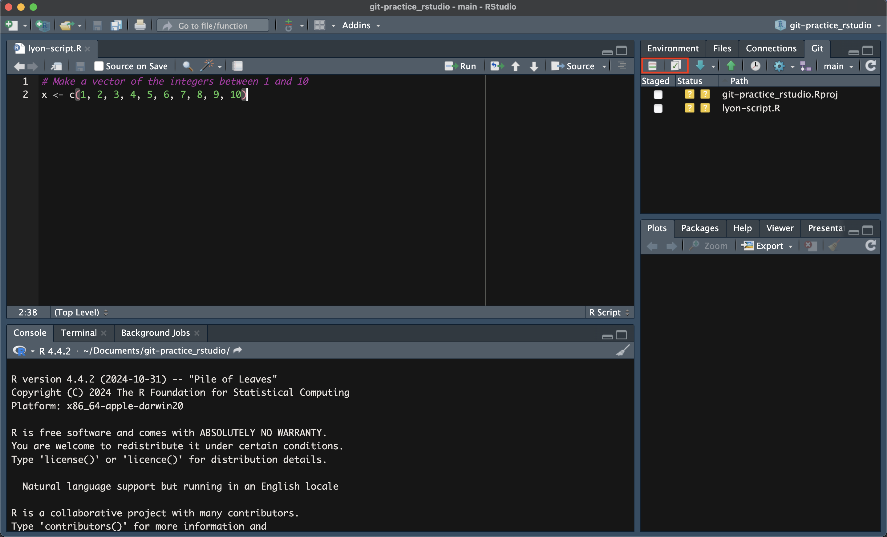
Note that there are other color-coded icons that can appear next to files in your working directory. These icons are shorthand for the Git status for any file whose status has changed since the last commit that you made. See below for a set of some of the more common icons along with their meaning.

Commit the File
By clicking one of the buttons in the previous step, we’ve opened the window where we can commit our new script. To actually make the commit, we need to do three things:
- “Stage” the new file by checking the box next to it
- Note that when you do this, the two yellow
?will become a greenAto indicate we’re adding the file to Git tracking
- Note that when you do this, the two yellow
- Write a commit message about what this commit entails
- Think about what information will be useful to ‘future you’ or your collaborators 6+ months from now
- Click the “Commit” button
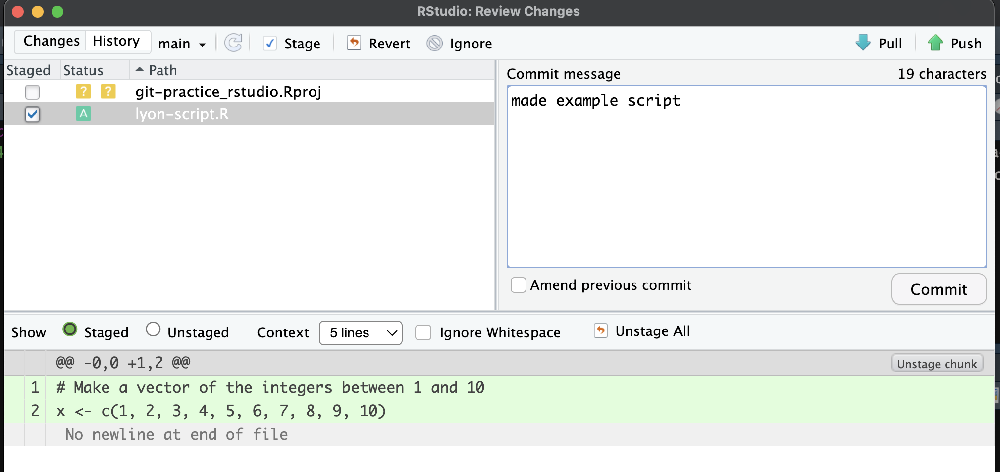
After you click the “Commit” button, you should get a message that looks something like the following screen shot. You can now close both this new message as well as the pop-up window and return to ‘normal’ RStudio.
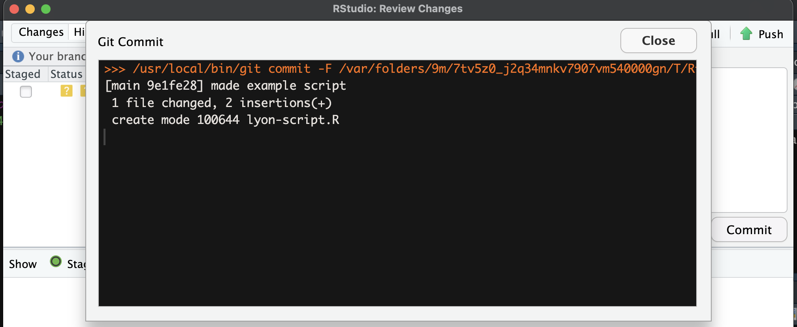
If the above steps went well, you should see something like the following image. The important bits are twofold: (1) your script is no longer listed in the Git tab and (2) there is a message saying “Your branch is ahead of ‘origin/main’ by 1 commit”.
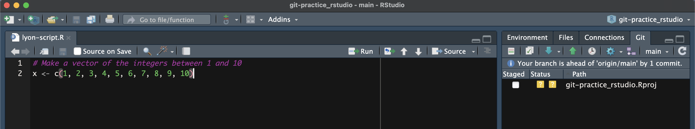
We can leave aside what “origin/main” specifically means for now but we did just make one commit so we can surmise that our local clone should have one more commit than what GitHub knows about (at this point).
Get the Latest Updates
Before we can send our one commit up to GitHub, let’s make sure that we have all the changes that GitHub has by “pulling” the repository. To do this, click the blue downward-facing arrow button in the Git pane. Because we are working alone in this tutorial, there should be no changes so you should get the following message.
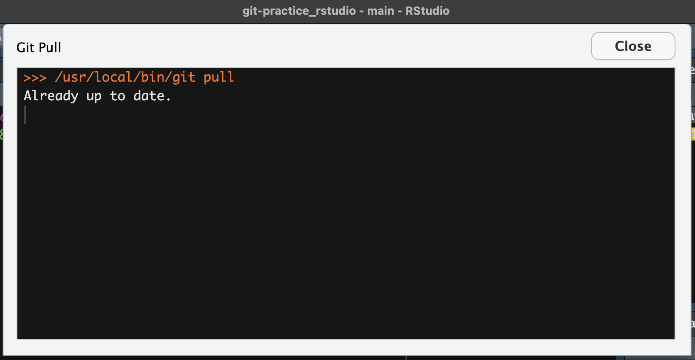
Note that when you are collaborating with a large team, you will want to pull early and often so that you avoid the risk of working on an outdated version of a file. You may also want to pull before making a commit to further reduce the risk of errors.
Send Your Commit to GitHub
Now that we have made our commit and confirmed there are no changes in the GitHub repository that we don’t already have, we can “push” our changes back to GitHub. To do this, click the green upward-facing arrow button in the Git pane. You should get a message that is something like the following image.
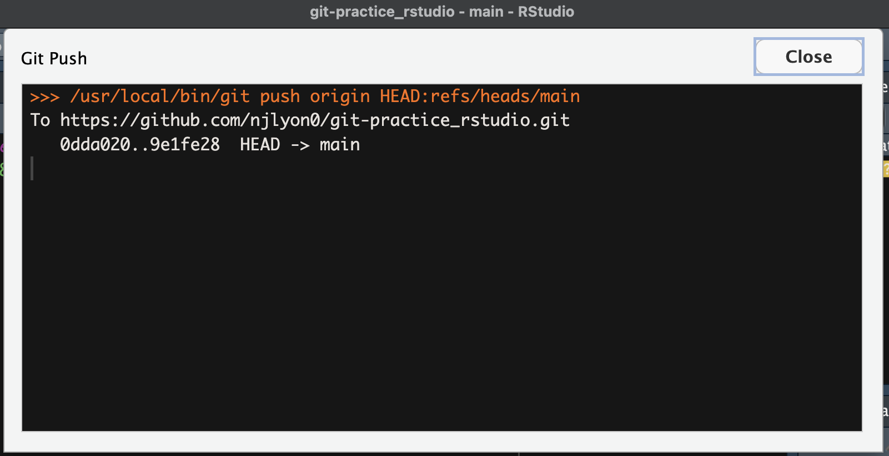
If we return to the GitHub home page for our repository, we can now see our script is there and the commit message is the same as the message we typed in RStudio!
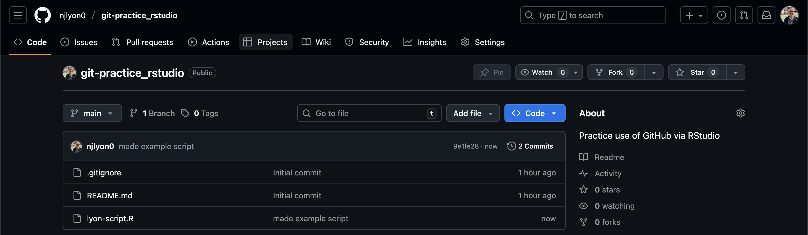
If your personal access token (PAT) was not set up correctly with RStudio or if it expired, then RStudio will ask for your GitHub username and password in a pop-up when you try to push. Please be aware that when they ask for a “password”, they actually meant your token! Enter your token in the field and you should be able to push now. Make sure to run gitcreds::gitcreds_set() to set a valid token afterwards so you don’t have to enter it manually every time!
Once you have a new file in your cloned folder (i.e., the folder on your computer that you’ve told Git to track). Positron should display the Git status of the file next to the file’s name. In this case, because this a new file that isn’t yet tracked by Git, there should be a U indicating that it is “untracked.”
Let’s get ready to commit our new script by clicking the “Source Control” piece of the left sidebar. That button should have a red “1” next ot it and its icon looks like this:
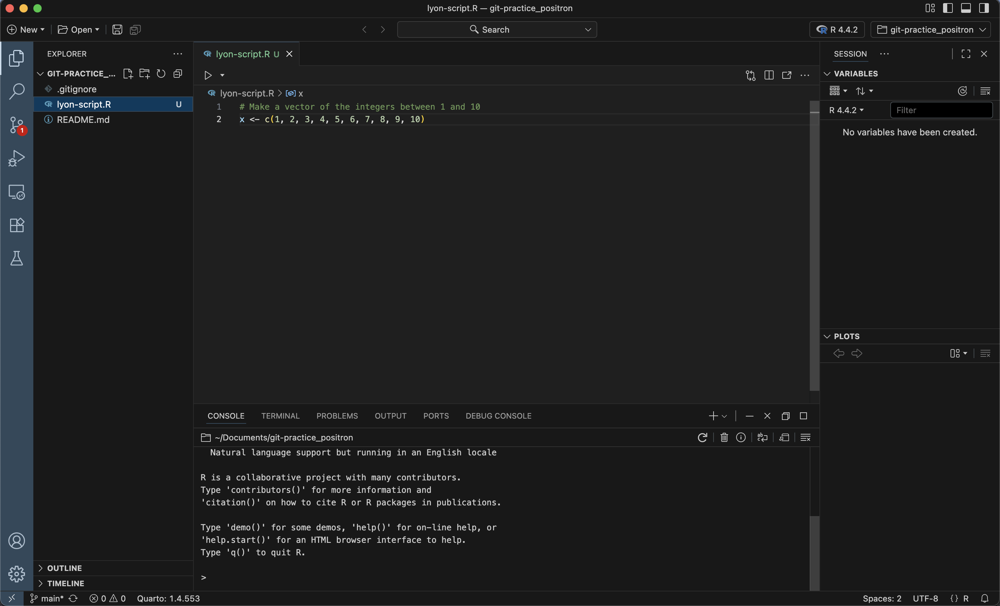
Once you are in the source control menu, you should see a list of the files with changes–currently only the new file that you just made.
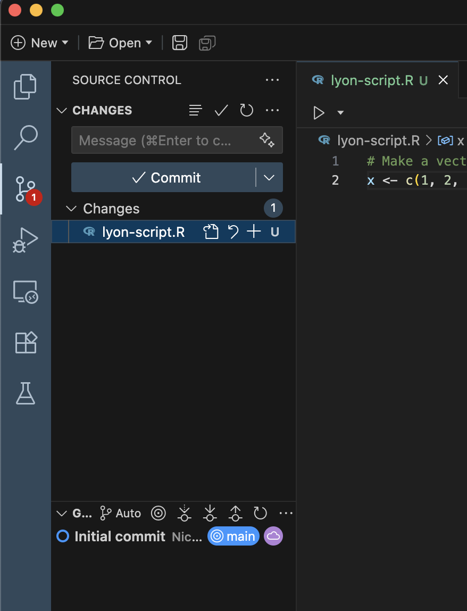
The reason that neither the “README.md” nor the “.gitignore” appear in this menu is that the source control menu will only show files whose status has changed since the last commit. Those two files are the same as when we cloned them so they won’t appear here.
Commit the File
We are now in the right place for us to commit our new script. To actually make the commit, we need to do three things:
- “Stage” the new file by click the plus sign next to it
- Note that when you do this, the
Uwill become anAto indicate we’re adding the file to Git tracking
- Note that when you do this, the
- Write a commit message about what this commit entails
- Think about what information will be useful to ‘future you’ or your collaborators 6+ months from now
- Click the “Commit” button
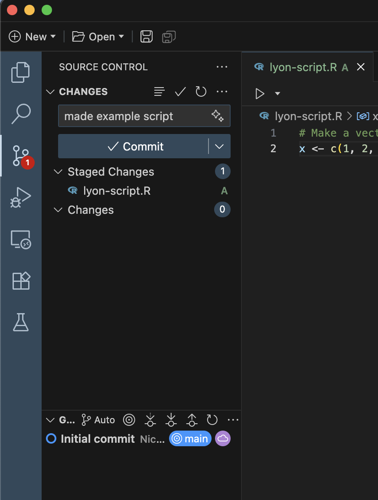
If the above steps went well, you should see something like the following image. The important bits are twofold: (1) your script is no longer listed and (2) in the menu at the bottom of this sidebar the label with a cloud (titled “origin/main”) is beneath a label with the commit message that you just wrote.
Additionally, the “Commit” button should now be a “Sync Changes” button.
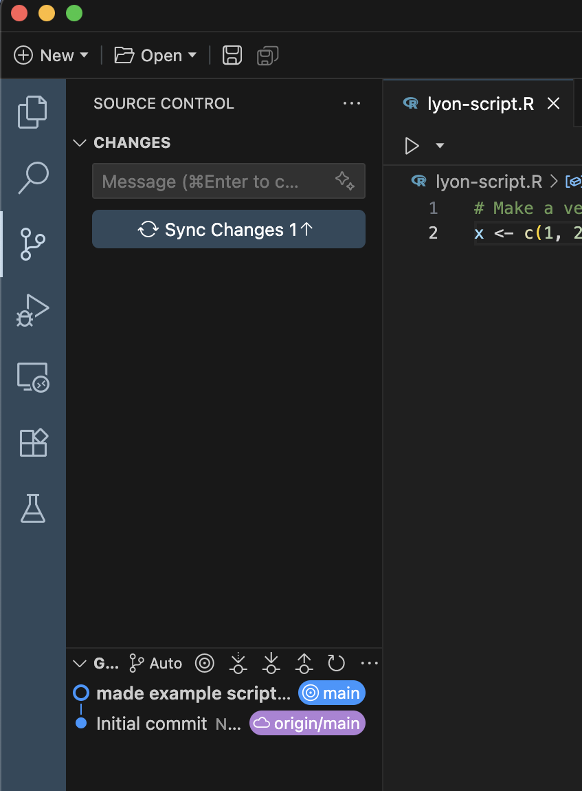
We can leave aside what “origin/main” specifically means for now but we did just make one commit so we can surmise that our local clone should have one more commit than what GitHub knows about (at this point).
Other Git Actions
If you’ve previously used other IDEs, you may notice that Positron’s single centralized button (while making normal use dramatically simpler) does hide other Git actions you may want to do. For example, if you edit several files, commit the changes to one, and want to sync just that commit, the “Sync” button is absent because the “Commit” button takes precedence.
In order to see a full list of Git options, hover your mouse over the “changes” panel (just above the commit message field) and click the ellipses (...) that will appear when you are hovering there.
You should now see a full list of the normal suite of Git actions that you can perform through Positron. If you want to sync, see the first option under the heading “Pull, Push” (about two thirds of the way down the dropdown menu).
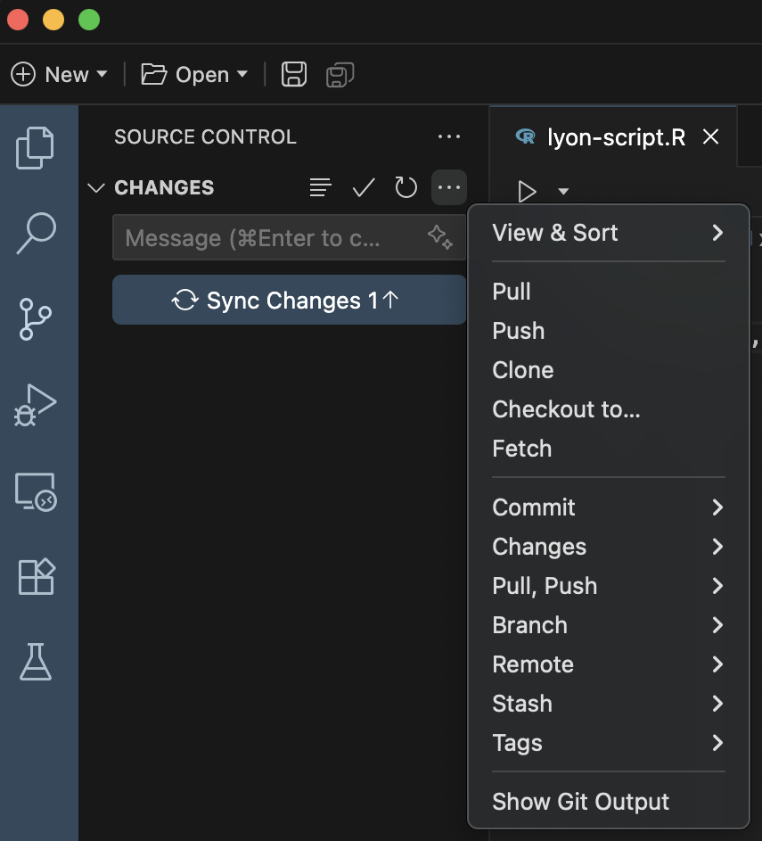
For our purposes here, the sync button is sufficient but you may want these other tools in the future.
Syncing the Clone and GitHub
Once you’re ready to sync changes between your clone and the GitHub repository it is in contact with, you can click the “Sync Changes” button.
If this is the first time you are doing this, you may get a warning like the following screenshot. If you get that message, click “OK, Don’t Show Again”.
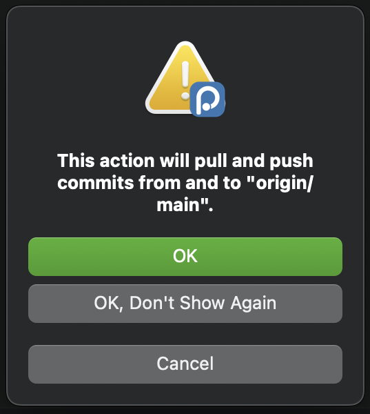
You will know that the sync worked because the “Sync Changes” button will revert to a “Commit” button. In our case, because that was the only file with any changes, it means there is nothing in that list and the “Commit” button is grayed out and inactive Additionally, the purple and blue labels in the bottom of the left sidebar will both be on the topmost commit message.
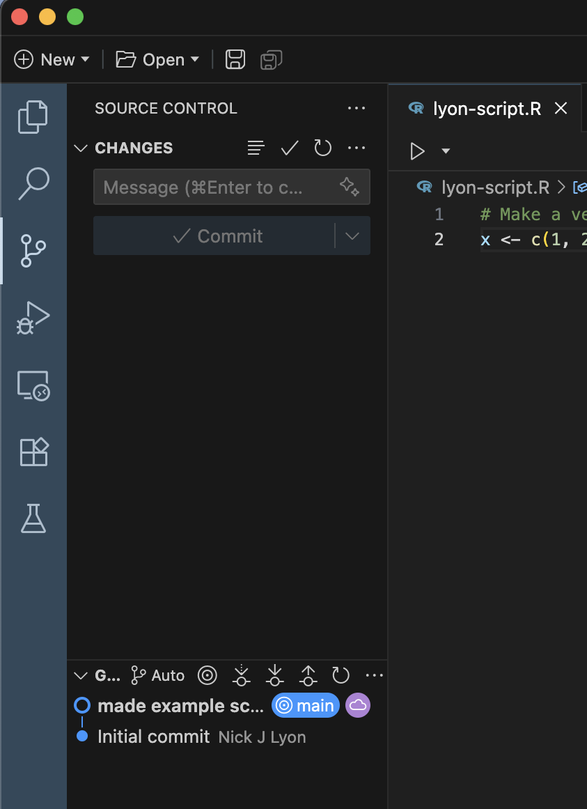
If we return to the GitHub home page for our repository, we can now see our script is there and the commit message is the same as the message we typed in Positron!
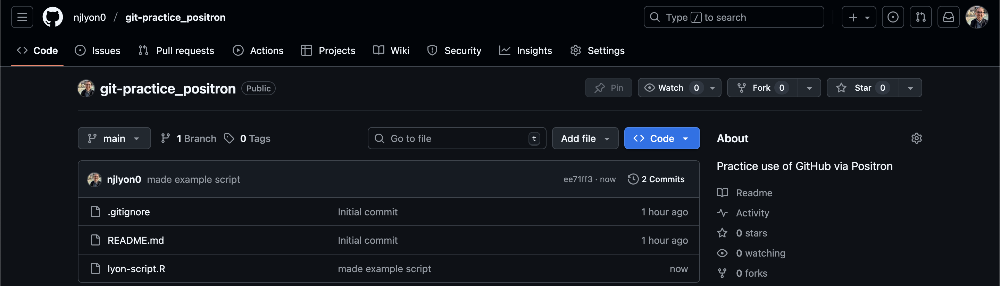
Rinse and Repeat
Great! Now that your script has been added to the group repository, you should try to repeat the same workflow over again just to get a feel for how it works. Go back to your IDE and edit your own script. Save those edits, add your edited file to the staging area, write a commit message, then commit your changes. After committing, make sure to pull first then push after! When you pull, you might notice that scripts from your group members/collaborators will show up in your working directory.
Make sure to work on your own script. If you and another group member work on the same script at the same time, this may lead to merge conflicts with Git. If two people were to work on the same script, they may be making different edits on the same lines, and Git would not know which edits to keep. To avoid merge conflicts, be mindful of what files you are working on and always communicate this to your group members!